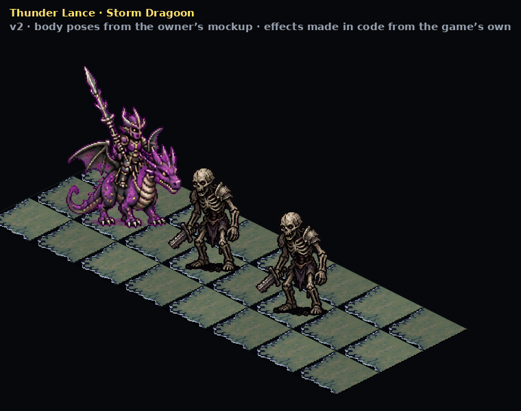
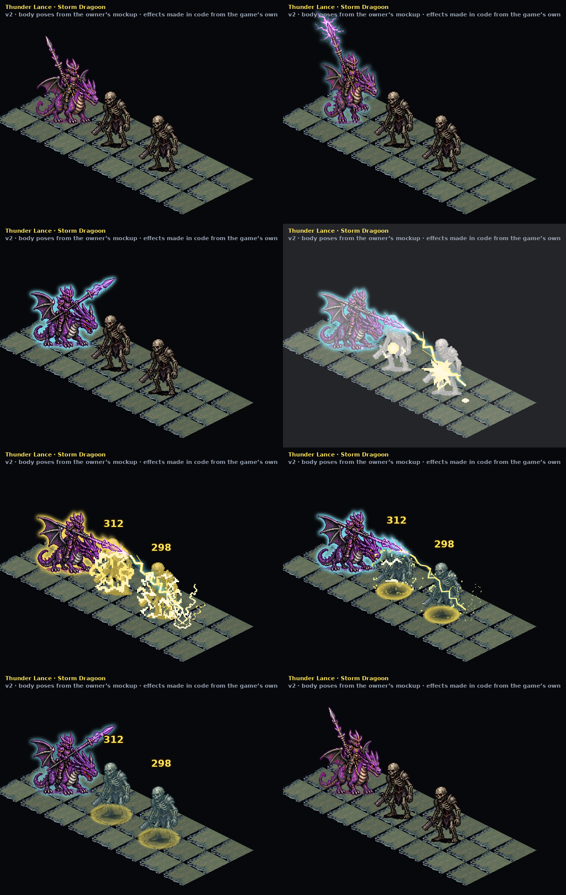
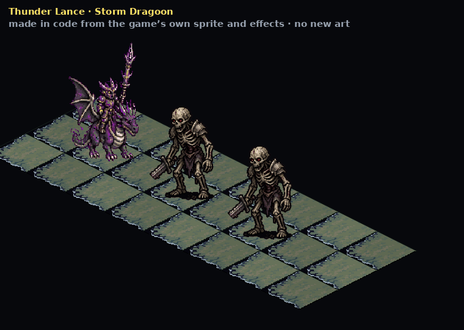
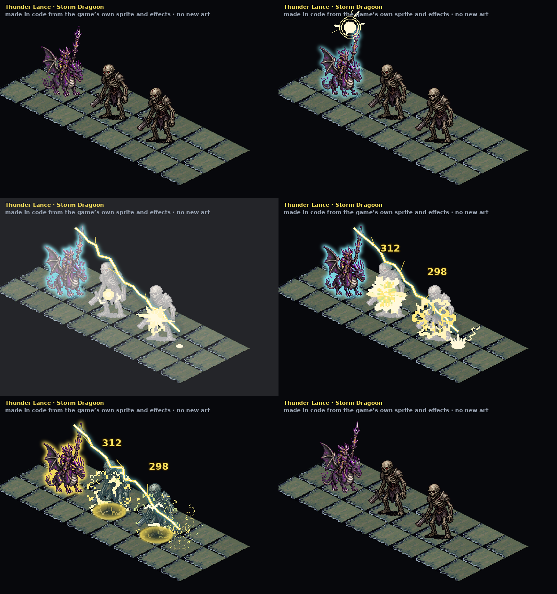

The body now uses the four poses from the owner's mockup: standing, lance raised and sparking (the charge), lance lowered, and the thrust. The bolt fires from the tip of the thrust. The effects are the same as v1. Not in the game.

Key frames: stand, charge, wind-up, the hit, the bolt, the afterglow, recovering, back to standing.

A test of animating a move with code only: the Storm Dragoon sprite, a skeleton, the grass and the game's own lightning and charge-up effects, recolored yellow and cyan. No new art. Not in the game.
Charge-up glow and sparks on the lance, a lunge, the bolt through the target and 3 tiles past it, both enemies hit, the black-center rings fade, back to idle.

Idle, charging, the hit, the bolt piercing, the afterglow, back to idle.
